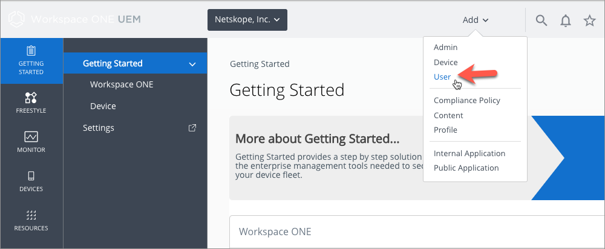
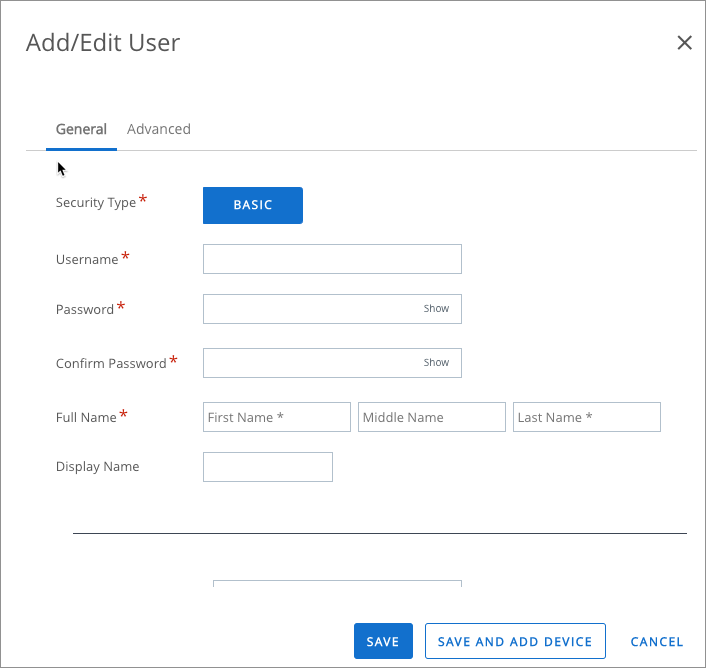
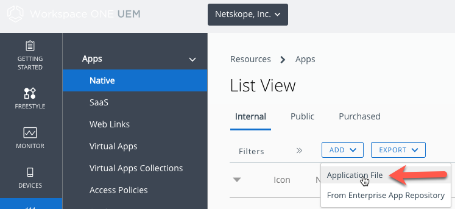
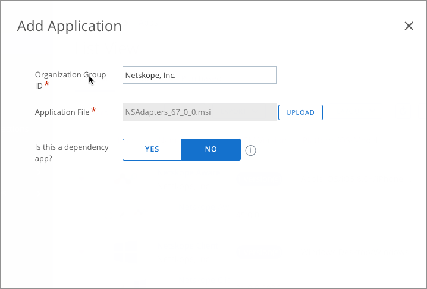
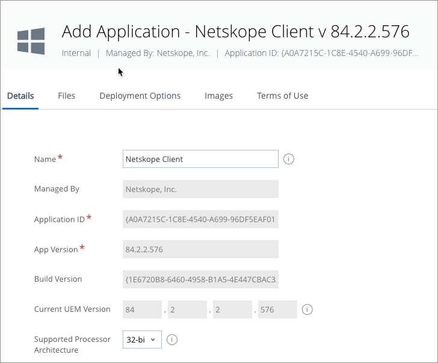
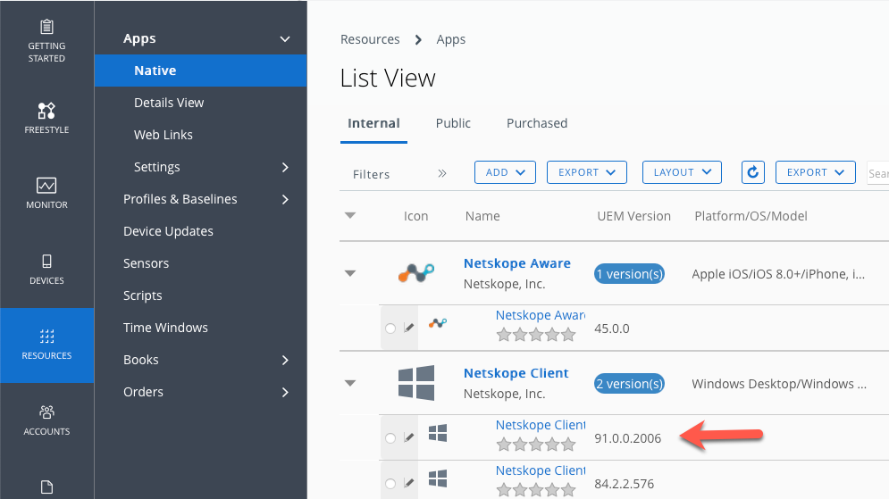
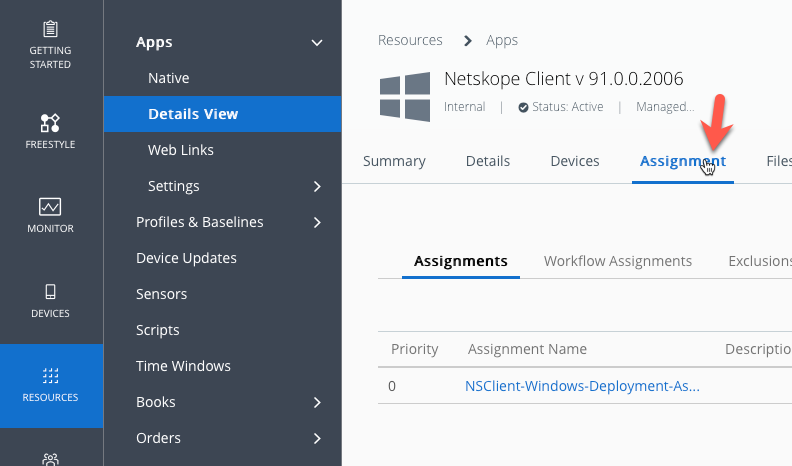
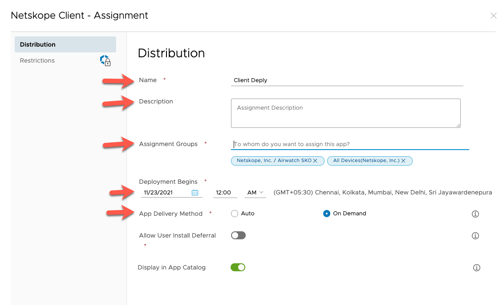
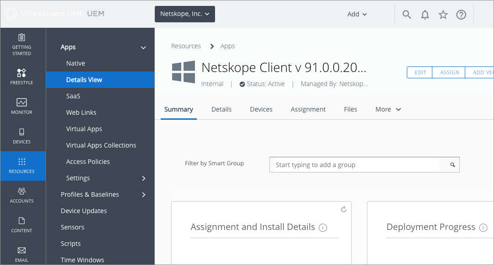

Deploy Netskope Client with Workspace One
VMWare Workspace One ( previously known as AirWatch) is an enterprise MDM solution that manages devices from a single console.
End-user environment: macOS and Windows.
Prerequisites to Deploying Client using Workspace One
All macOS and Windows devices must be connected to AD.
Deploying Client on macOS with Workspace One
Login to your Workspace One admin console.
Go to Devices > Staging and provisioning > Components > Files/Actions page.
Click Add files/Actions and select macOS.
In the General tab, enter the required information.
In the Files tab, upload the preinstall script, pkg file, and scripts. Also, mention the local path where these files should be downloaded.
In Manifest, under Install Manifest, add the below steps in the same order.
Step 1
Action to perform: Run
Command Line and Arguments to run :
chmod +x <Install script local path>(Refer point 4 )Timeout : As you wish (default 0)
Step 2
Action to perform : Run
Command Line and Arguments to run :
sudo <Install script local path> param1 param2 param3 param4Timeout : As you wish (default 0)
For UPN mode, the params are :
<adonman url> <Org Key> upnFor peruserconfig mode, params are:
<adonman url> <Org Key> < peruserconfigFor Email based, params are:
<tenant url> <AD domain name> <Rest API token>
Step 3
Action to perform : Install
File Path and Name to Install <pkg file local path>
Then go to Devices > Staging & Provisioning > Product List View and click Add Product.
Select MacOS as the platform.
In the General tab, enter the required details.
In manifest, under the policy action, specify the following:
Action to perform : Install Files/Actions
Files/Actions : Select the files/action created above
Deploying Client on Windows using Workspace One
This section lists the steps to deploy Netskope Client on Windows devices:
Create Enrollment User
Login to Workspace One admin console and click Add > User from the header menu options.
In the Add / Edit User pop-up windows, enter all required user details

Upload Client Installer File
Goto Resources > Apps > Native.
In the Internal tab, click Add and select Application File.
Click Choose file and locate the Netskope Client installation file (with the msi extension) . You can download the latest installation files from Netskope Support. After selecting the file, click the SAVE button to continue.

In the Add Application pop-up, select NO for Is this a dependency app? option.
Click the Continue button. This will display the details of uploaded installer file. In the Details tab, leave the form data with default values.
In the Deployment Options tab, scroll down to the Install Command field and enter the following command:

msiexec /I NSClient.msi installmode=idP tenant=corp domain=eu.example.com /qn
Note
Ensure that you end the command with the /qn parameter for silent and uninterrupted installation. Leave all other options with default values.
Configure Deployment Schedule
Go to Resources > Native and click the Client distribution that you have created.
Select the distribution link.
Click the Assignment tab and enter the following details:
Name: Specify a name for this delivery or deployment.
Description: Optional parameter to add more information about the deployment.
Assignment Groups: Select the groups in your organization to deploy the Client.
Deployment Begins: Time to start the deployment. Leave the default options as is.
App Delivery Method: Select Auto or On-Demand. Auto option will auto deploy client at the configured time. On-Demand can be used to deploy only when required for specific devices or groups.
Once the deployment is complete, go to Resources > Native and click the uploaded client. This will display a pop-up window with the status deployment.
